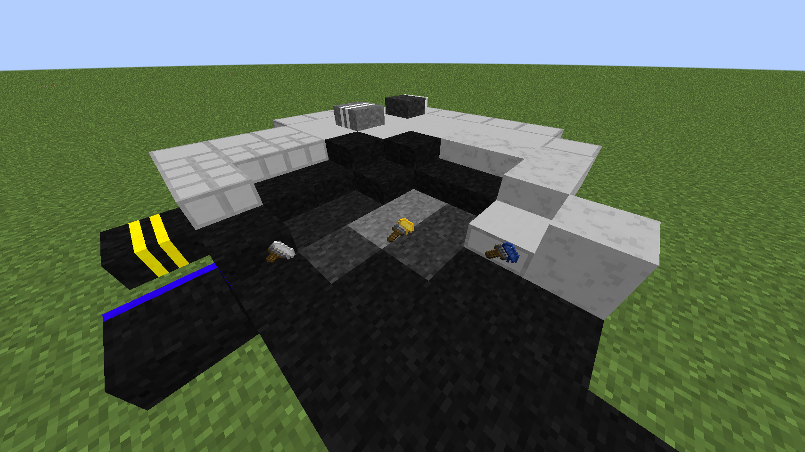
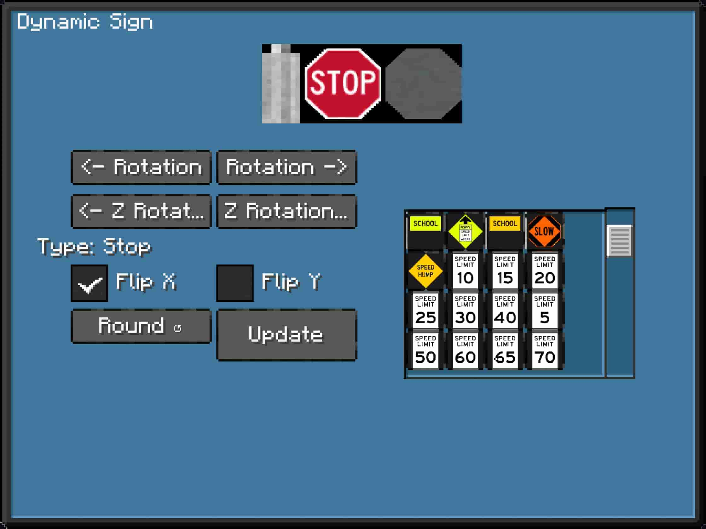

This mod is an addon to Thingamajigs 2 for NeoForge. In version 1.0.1+, you do not need Thingamajigs to run this mod.
Additions include: asphalt and sidewalk blocks, paintbrushes with road marking patterns, and dynamic road signs.

Long Roads' asphalt comes in four ages. Each age affects walking speed, and the oldest asphalt will do nothing to your speed. Enchantments will increase movement speed on asphalt, except the oldest age.
Paintbrushes can be crafted from a brush and a dye of some kind. 🖱 Shift-Right click to change the road pattern selected and 🖱 right-click on a block to paint the selected road pattern. 🖱 Right-click the paintbrush in the inventory to change the length (minimum of 2 and a maximum of 16). There is also a multicolored brush which can paint mixed-color road patterns unto blocks.
Paintbrushes can also change asphalt into painted asphalt, if the current paintbrush road pattern can be applied in this way. Otherwise the pattern is applied on top of the block.
There are currently no plans to place combined patterns into one block space.
Dynamic Road Signs use data-driven objects called

SignTypes are defined at the location "data/thingamajigslongroads/thingamajigslongroads/sign_type/ ".
It should be noted that SignTypes have a very specific syntax.
Keep in mind that
The
Though there is a